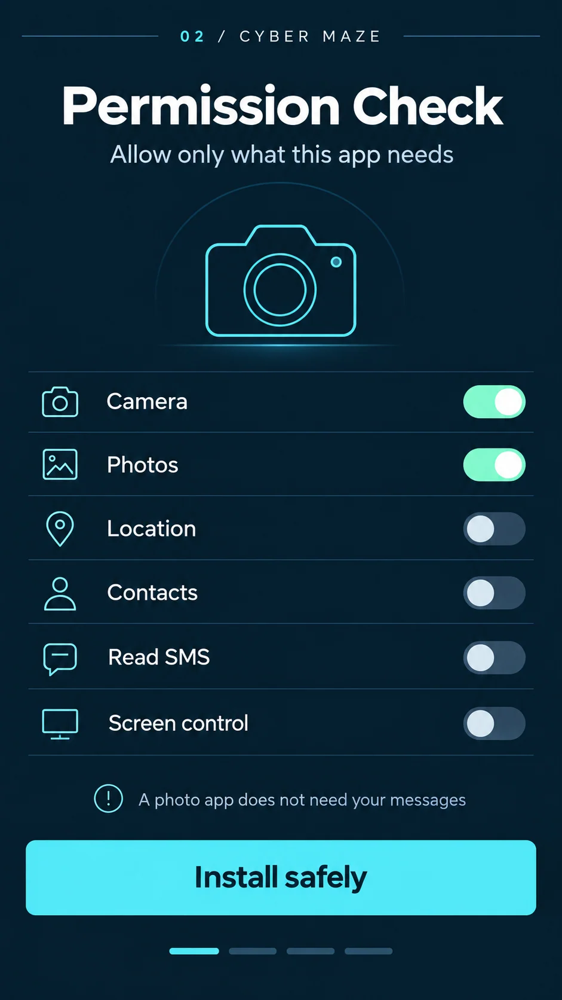
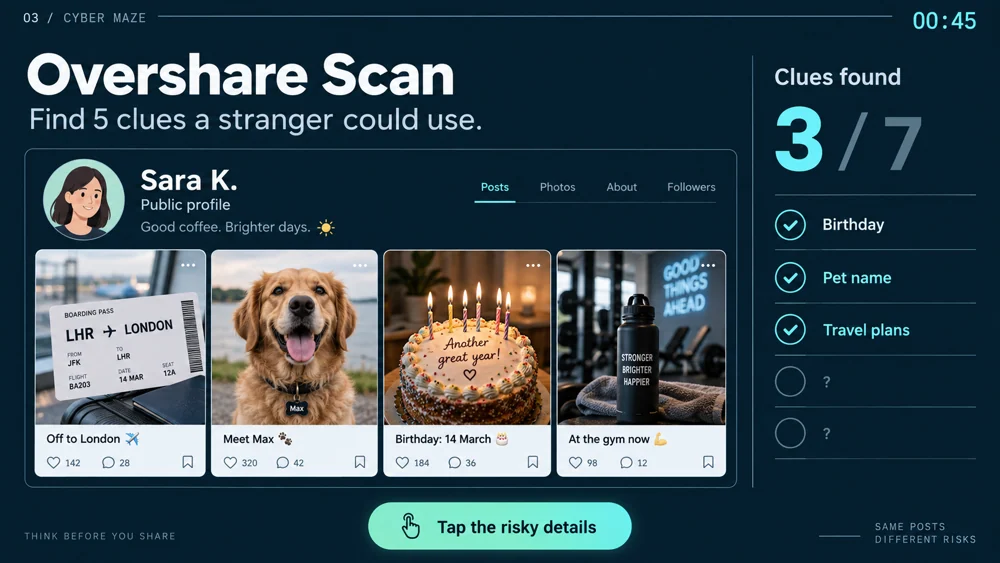
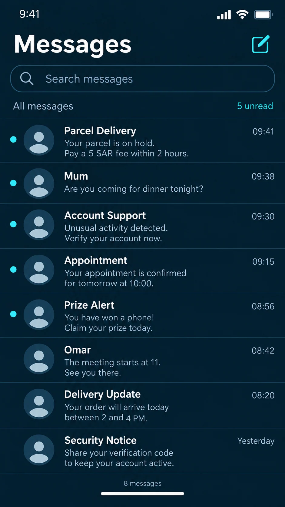
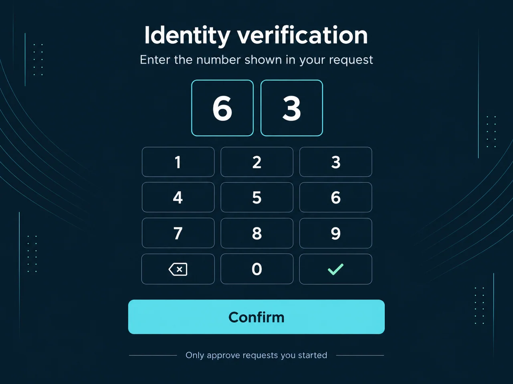

Recognize the situation
A familiar phone, social feed or keyboard provides the starting point. The subject is introduced through the interface itself.
Five familiar digital moments. Five opportunities to make a more thoughtful choice.
Explore the storyMake an abstract topic feel immediate: a password to enter, a permission to grant, a post to share or a message to question.
This family of interface studies turns cybersecurity themes into small, recognizable activities. Each screen begins with a situation people already know, then brings one decision into focus. The collection spans a large-format keyboard, social content, permission switches, a phone inbox and a verification keypad.
A consistent cyan-on-dark visual language connects the activities. Familiar interface patterns provide context, while oversized controls and brief instructions make the point of interaction easy to identify.
A familiar phone, social feed or keyboard provides the starting point. The subject is introduced through the interface itself.
Each activity isolates a different action: choosing permissions, assessing a message, entering a password or reviewing a verification request.
Prominent controls, selected states and feedback areas keep the visitor’s action connected to the learning prompt.
Explore the complete compositions and interface states. Select any image for a closer look.
05 / PROJECT IMAGES
Select a view to explore.
A password exercise pairs familiar input with immediate feedback. Displayed security estimates are part of the activity artwork.

Permission check: a camera app asks visitors to distinguish necessary access from unrelated requests.

A simulated social profile becomes an exercise in spotting what everyday posts reveal.

Inbox exercise: routine and suspicious example messages share the same familiar phone layout.

Verification prompt: a large keypad and a reminder to approve only requests the visitor initiated.

Structure, interaction and visual decisions that give the work its character.
RoleConfirm graphic/UI design, interaction decisions and implementation separately.
AssetsAramco folder context does not establish a direct client relationship. Existing mechanics, supplied copy, branding and collaborators need attribution.
StatusInterface and concept evidence; approved version and installation status unverified.